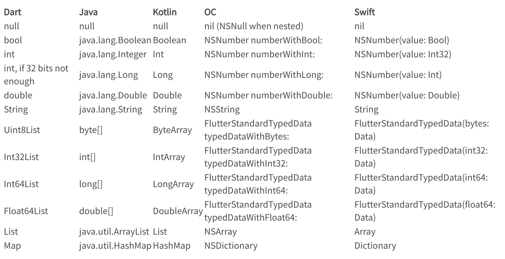
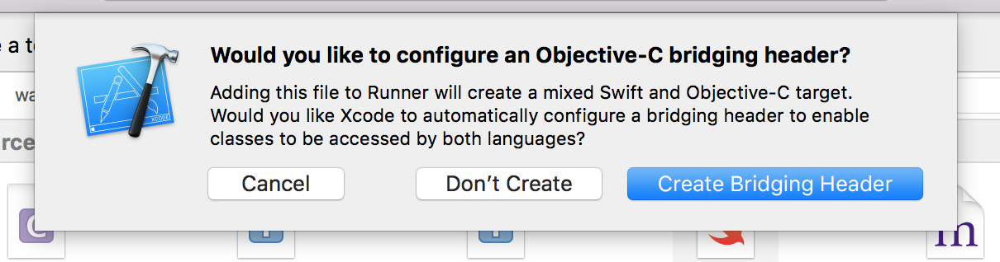

什么是plugin
Flutter和Dart生态系统的软件包有两种模板，分别是packages和plugin，其中plugin包含Android、iOS平台特定实现，一般需要Flutter端与Android或iOS进行通讯交互（类比Hybrid或RN中JS与Native的交互），以实现特定功能。
创建plugin
一般使用命令创建Plugin：flutter create —org com.example —template=plugin hello，执行命令后，会在当前目录下生成一个hello文件夹，里面是一个plugin的简单demo实现。iOS可以使用OC和Swift，Android可以使用Java和kotlin进行代码编写，命令默认使用swift及kotlin，如需修改，使用-i及-o命令。例如要创建一个使用OC及java的plugin，命令为：flutter create —org com.example —template=plugin -a java -o objc hello。
平台通道数据类型及编解码器
在平台通道进行数据传输时，Flutter它会自动对这些值进行序列化和反序列化。 下表展示了如何在平台端接收 Dart 值，反之亦然：

创建一个样例Demo
为了更好的说明流程，这里创建一个禁用截屏功能的plugin进行说明，plugin提供三个功能：全局添加水印、截屏监控、禁用截屏。其中全局添加水印为在Flutter当前页面栈的最上层添加一个半透、有水印、穿透触摸事件的全遮盖页面，为纯dart实现，不需要与平台进行交互； 截屏监控为当平台监听到截屏行为后，立即通知Flutter端，是一个持续通讯的过程；禁用截屏为Flutter端通知平台执行禁用操作（只支持Android平台）。
此plugin已经开发完成并发布到官方pub，可以在GitHub - disable_screenshots下载并查看源码。
- 创建命令：
flutter create --org com.devlxx --template=plugin disable_screenshots - 执行命令后会生成如下目录：
1
2
3
4
5
6
7
8
9
10
11├── disable_screenshots
│ ├── CHANGELOG.md
│ ├── README.md
│ ├── android
│ ├── disable_screenshots.iml
│ ├── example
│ ├── ios
│ ├── lib
│ ├── pubspec.lock
│ ├── pubspec.yaml
│ └── test
pubspec.yaml：plugin的配置文件。里面有字段：
name、description、version、homepage，这些均是字面意思，很好理解。另外有字段environment，指定插件的使用环境，最关键的是有一个flutter字段：1
2
3
4
5
6
7
8
9
10
11
12
13# The following section is specific to Flutter.
flutter:
# This section identifies this Flutter project as a plugin project.
# The 'pluginClass' and Android 'package' identifiers should not ordinarily
# be modified. They are used by the tooling to maintain consistency when
# adding or updating assets for this project.
plugin:
platforms:
android:
package: com.devlxx.disable_screenshots
pluginClass: DisableScreenshotsPlugin
ios:
pluginClass: DisableScreenshotsPlugin这个字段说明了plugin支持的平台以及各平台的入口class，这个需要能一一对应。默认会给你创建好，不要随意修改这里及类名即可。
README.md: 项目说明。当发布到官方的pub.dev后，插件的Readme栏目内容即为此文件内容。lib：pluginFlutter端的实现ios：pluginios端的实现android：pluginandroid端的实现example：plugin的使用demo，可以运行此demo进行测试，另外demo里面也有README.md文件，当发布到官方的pub.dev后，插件的Example栏目内容即为此文件内容。
- Flutter与iOS、Android通讯原理
Flutter只是一个UI框架，与平台相关的功能只能由平台来原生实现，这就需要Flutter与原生进行相互通讯。它们通过PlatformChannel进行互相通讯，核心原理是：- Flutter通过PlatformChannel将要传递的数据编码后，跨线程发送到宿主（iOS或Android）
- 宿主接收到PlatformChannel的消息后，执行原生API。
- 宿主执行完原生API后，将数据编码并原路返回给应用程序的Flutter部分
图示如下：
PlatformChannel有三种类型，分别是：BasicMessageChannel、MethodChannel、EventChannel。其中BasicMessageChannel接收一个MessageCodec
- `MethodChannel`：用于Flutter主动调用平台端的方法，并获得相应的返回值，例如获取系统电量、发起Toast等，可以说是“一次性”的调用。这里将通过它来告知平台端禁用截屏功能
- `EventChannel`，用于传递事件。例如Flutter要监听电量变化，平台端可以将监听到的电量变化情况持续的通过`EventChannel`传递给Flutter端。这里将通过它来`截屏监控`功能。disable_screenshots的禁用截屏功能实现（MethodChannel）
Flutter端实现
创建命令会在lib目录下生成一个disable_screenshots.dart文件，里面会有一个默认的MethodChannel实现样例，我们对其进行修改，修改后的核心源码如下：1
2
3
4
5// 1. 创建一个MethodChannel
final MethodChannel methodChannel = const MethodChannel("com.devlxx.DisableScreenshots/disableScreenshots");
// 2. 通过MethodChannel将方法名和参数编码后发到平台端
methodChannel.invokeMethod("disableScreenshots", {"disable": disable});Android端实现（kotlin）
创建命令会在android目录下的/src/main/kotlin/com/devlxx/disable_screenshots/生成一个DisableScreenshotsPlugin.kt文件，其中实现禁用截屏的核心代码为：1
2
3
4
5
6
7
8
9
10
11
12
13
14
15
16
17
18
19
20
21
22
23
24
25
26private fun onAttachedToEngine(applicationContext: Context, messenger: BinaryMessenger) {
this.applicationContext = applicationContext
// 1. 创建一个MethodChannel
this.channel = MethodChannel(messenger, "com.devlxx.DisableScreenshots/disableScreenshots")
//handle指向了this，this必须实现onMethodCall方法
this.channel.setMethodCallHandler(this)
}
// 当Flutter端的MethodChannel调用invokeMethod时，它的参数会传递到这里
override fun onMethodCall( call: MethodCall, result: Result) {
if (call.method == "disableScreenshots") {
var disable = call.argument<Boolean>("disable") == true
// 禁止截屏需要获取到当前的activity，如何获取到activity请自行查看源码，这里不做说明。
if (disable) {
activity.window.setFlags(WindowManager.LayoutParams.FLAG_SECURE, WindowManager.LayoutParams.FLAG_SECURE);
println("禁用截屏")
} else { // 允许截屏
activity.window.clearFlags(WindowManager.LayoutParams.FLAG_SECURE)
println("允许截屏")
}
// 调用后，Flutter端的invokeMethod会收到调用的结果，结果为一个空字符串
result.success("")
} else {
result.notImplemented()
}
}iOS端实现。（iOS无法实现禁止截屏功能，这里仅做说明）
创建命令会在ios目录下的Classes/下生成一个DisableScreenshotsPlugin.swift文件，其中实现禁用截屏的核心代码为：1
2
3
4
5
6
7
8
9
10
11
12
13
14
15
16
17
18
19
20
21
22
23
24
25
26
27
28
29
30
31public class SwiftDisableScreenshotsPlugin: NSObject {
public static func register(with registrar: FlutterPluginRegistrar) {
let instance = SwiftDisableScreenshotsPlugin()
// 1. 创建一个MethodChannel
let methodChannel = FlutterMethodChannel(name: "com.devlxx.DisableScreenshots/disableScreenshots", binaryMessenger: registrar.messenger())
registrar.addMethodCallDelegate(instance, channel: methodChannel)
}
}
extension SwiftDisableScreenshotsPlugin: FlutterPlugin {
// 当Flutter端的MethodChannel调用invokeMethod时，它的参数会传递到这里
public func handle(_ call: FlutterMethodCall, result: @escaping FlutterResult) {
/*
//iOS平台无法实现禁用截屏功能，这里仅做MethodChannel的使用说明
if call.method == "disableScreenshots" {
if let arg = call.arguments as? Dictionary<String, Any>, let disable = arg["disable"] as? Bool {
if disable {
//禁用截屏
} else {
//允许截屏
}
} else {
print("【SwiftDisableScreenshotsPlugin】disableScreenshots 收到错误参数")
}
} else {
result(FlutterMethodNotImplemented)
}
*/
result(FlutterMethodNotImplemented)
}
}
disable_screenshots的截屏监控功能实现（EventChannel）
Flutter端实现
1
2
3
4
5
6
7// 1. 创建EventChannel
final EventChannel eventChannel = const EventChannel('com.devlxx.DisableScreenshots/observer');
// 2. 监听平台端发来的事件
_eventChannel.receiveBroadcastStream().listen((event) {
//平台端发来事件后会调用到这里
});Android端实现
1
2
3
4
5
6
7
8
9
10
11
12
13
14
15
16
17
18
19
20
21
22
23
24
25// 1. 创建EventChannel
val eventChannel = EventChannel(messenger, "com.devlxx.DisableScreenshots/observer")
// 2. handle指向了this，this必须实现onListen及onCancel方法。
eventChannel.setStreamHandler(this)
//3. 获取到EventChannel.EventSink后，可以通过它发送事件给Flutter端
override fun onListen(arguments: Any?, events: EventChannel.EventSink?) {
println("开始监听")
// 4. 需要将events存起来，后续需要通过它将事件发送给Flutter端
eventSink = events
// 5. ScreenShotListenManager为一个实现了监听截屏功能的Manager
screenShotListenManager = ScreenShotListenManager.newInstance(applicationContext)
screenShotListenManager.setListener { imagePath ->
println("监听到截屏，截屏图片地址是：$imagePath")
// 6. 发送事件给Flutter端，告知监听到了截屏行为。
eventSink?.success("监听到截屏行为")
}
screenShotListenManager.startListen()
}
// EventChannel被取消
override fun onCancel(arguments: Any?) {
screenShotListenManager.stopListen()
eventSink = null
}iOS端实现
1
2
3
4
5
6
7
8
9
10
11
12
13
14
15
16
17
18
19
20
21
22
23
24
25
26
27
28
29
30
31
32
33
34
35
36
37
38
39
40
41
42
43public class SwiftDisableScreenshotsPlugin: NSObject {
var eventSink: FlutterEventSink?
// 注册使用此插件
public static func register(with registrar: FlutterPluginRegistrar) {
let instance = SwiftDisableScreenshotsPlugin()
// 1. 创建EventChannel
let channel = FlutterEventChannel(
name: "com.devlxx.DisableScreenshots/observer",
binaryMessenger: registrar.messenger()
)
// 2. 设置handler为SwiftDisableScreenshotsPlugin，它必须实现onListen及onCancel方法
channel.setStreamHandler(instance)
}
6. 发送事件给Flutter端，告知监听到了截屏行为。
func callScreenshots() {
eventSink!("监听到截屏行为")
}
}
extension SwiftDisableScreenshotsPlugin: FlutterStreamHandler {
//3. 获取到EventChannel.EventSink后，可以通过它发送事件给Flutter端
public func onListen(withArguments arguments: Any?, eventSink events: @escaping FlutterEventSink) -> FlutterError? {
// 4. 需要将events存起来，后续需要通过它将事件发送给Flutter端
eventSink = events
// 5. iOS端实现截屏监听功能很简单，添加相应通知的监听即可。
NotificationCenter.default.addObserver(
self,
selector: #selector(callScreenshots),
name: UIApplication.userDidTakeScreenshotNotification,
object: nil)
return nil
}
// EventChannel被取消
public func onCancel(withArguments arguments: Any?) -> FlutterError? {
NotificationCenter.default.removeObserver(self)
eventSink = nil
return nil
}
}
综合MethodChannel及EventChannel的三端实现来看，它们的使用还是比较简单的，对于开发者来说，挑战在于需要对三端都熟悉，并写出高质量的代码。
在实际开发时，可以先用相应的开发者工具打开Example目录下的iOS及Android的项目，分别进行平台特定代码的开发、调试。当iOS及Android的平台代码编写完成后，再直接运行Example项目，进行Flutter端的功能开发及整体的调试。
全局添加水印
全局添加水印不涉及平台端，为纯Flutter端实现。和常规的Flutter Dart代码编写没什么差异，这里不做说明，具体实现可以直接查看源码。
发布plugin
当plugin的三端代码写好后，需要进行发布。plugin的发布非常简单，分为两步。
第一步为检查项目是否OK，执行命令：flutter packages pub publish --dry-run后，会提示项目是否存在遗漏或者异常部分，如果有异常，根据提示进行修复即可。例如此项目在执行此命令时，有提示存在问题：
1 | Package validation found the following potential issue: |
这个是Flutter的一个bug，默认创建的模板会包含一个author字段，但是却无法检查通过，将pubspec.yaml中的author字段删除即可检查通过。
检查通过后，可以执行第二步，执行命令：flutter packages pub publish进行发布。执行后，根据命令行会提示进行操作，需要注意的是有一个验证身份的操作，将命令行出现的网址在浏览器中打开，然后在此页面登录自己的Google账号，这样就会将这个plugin与你的账号进行绑定及身份验证，操作完成后即发布成功，命令行输出如下所示：
1 | Do you want to publish disable_screenshots 0.0.1 (y/N)? y |
plugin发布成功后并不能立即在官方的pub中搜到，它需要一段时间来处理，但是可以直接输入地址看到：https://pub.dev/flutter/packages?q=disable_screenshots
发布失败问题处理
有时候会上传失败，提示Failed to upload the package。失败有可能是如下几种情况导致：
网络问题
以为package是发布到google的服务器上，如果无法科学上网，肯定是会失败的。有些同学开启代理后依然无法上传成功，那么需要检查终端是否走的代理（终端默认不走代理）。
此时需要给终端设置代理，也就是命令行代理。
在mac平台中，在.bash_profile文件中加入如下代码：
1 | # 终端走代理 |
重新打开终端后使用proxy_on，即可开启命令行代理。
当然你也可以使用软路由科学上网等其他方式让所有程序都走代理。
镜像配置导致的问题
很多同学使用pub的国内镜像来提高package拉取的速度，但是这些镜像设置会导致上传失败。 上传时将这些镜像配置关闭即可。
权限问题
一直失败无法找到原因时，可以使用命令flutter packages pub publish --verbose显示详细log，以分析问题出现的原因。例如有时候会出现异常log：HTTP response 400 Bad Request for POST https://storage.googleapis.com，这个并不是网络问题导致的，而是权限问题，添加subo执行：sudo flutter packages pub publish --verbose 。 即可上传成功
其它情况
如果上述操作都无法解决问题，可以去官方仓库的issue中查找答案或提问。
引用plugin
plugin开发完后，我们可以选择多种方式将plugin提供给其它开发者使用：
- 从本地路径引入
- 从Git仓库引入
- 从官方pub引入（需要先发布到官方pub）
- 从指定源引入
本地路径引入
plugin中的Example引入plugin就是通过本地路径方式引入的，这种方式很方便本地修改和调试，进入方式如下：
1 | dependencies: |
从Git仓库引入
顾名思义，直接从Git仓库拉取plugin，可以指定分支及路径。企业内部引用可以使用此种方式。样例如下：
1 | dependencies: |
官方pub引入及指定源引入这里不做说明，详情可以看官方教程：Using packages - Flutter
问题备忘
- 在老的flutter项目中，在iOS平台运行可能出现编译问题无法运行。这个是由于老的flutter项目里面没有使用到swift，所以没有briging文件，但是插件使用了swift，所以会编译失败，这种情况直接使用xcode在iOS项目中创建一个swift文件，会自动生成briding文件。

参考资料
- GitHub - huiger/ScreenShotDemo: 🔥Android 手机应用内截屏, 截屏监听
- Experimental: Create Flutter Plugin · flutter/flutter Wiki · GitHub
- Using packages - Flutter
- Developing packages & plugins - Flutter
- Writing custom platform-specific code - Flutter
- Flutter 开发（14）：BasicMessageChannel 的使用 | 肥言肥语
- dart - How to get Activity and Context in Flutter plugin - Stack Overflow
- https://stackoverflow.com/questions/28606689/how-to-prevent-screen-capture-in-android